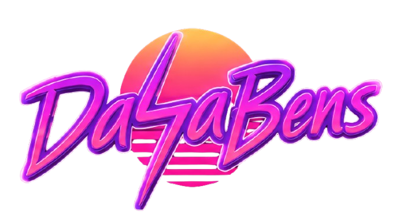

ActiveWebsite for Online Christian Resources — DaSaBens
July 2026 – Present
Leading in the development of an online, teen-focused Christian platform created with my siblings to help people explore the Bible through digital content.
CloudflareHTML/CSS/JSStackBlitzGitHubDNS